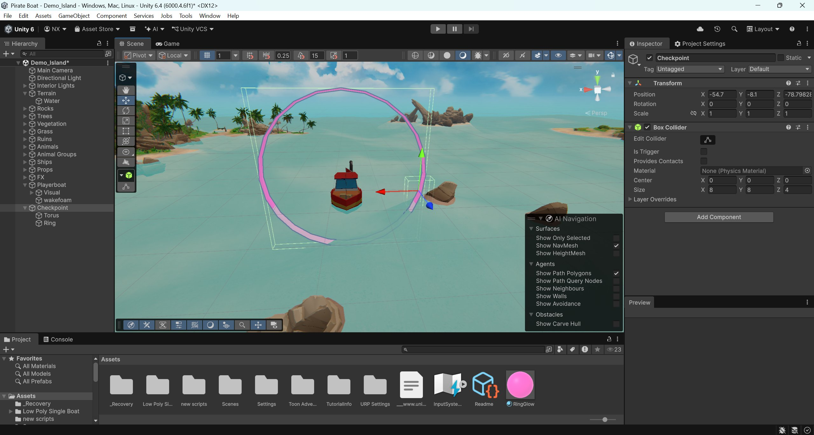
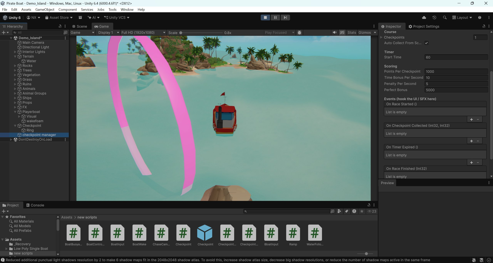

A boat racing system originally built as a VR experience and later deployed as a dual-screen physical installation with custom ship's-wheel controllers at a luxury retail venue. Checkpoint racing, buoyancy physics, themed art direction. Fully rebuilt in 2026 with a proper pirate ship and a portrait-orientation HUD for mobile and vertical-screen deployments.
The original brief was a VR boat racing experience, head-tracked, motion-controlled, designed for headsets. The mechanic was simple: race through a sequence of checkpoint rings across open water, beat the timer, score on time bonuses.
It later got deployed as a physical installation in a luxury retail mall, dual-screen, with custom ship's-wheel controllers built specifically for the booth. The themed framing was set by the deployment client; the underlying system was the same.
In 2026 I rebuilt the whole thing on Unity 6.4 with a proper pirate ship, a portrait-orientation HUD (SCORE / TIMER / CHECKPOINTS), and a cleaner checkpoint system. The newer version is designed to run on vertical screens, kiosks, mobile, mall installations.
The core game system is built on three pieces I designed to be reusable: a course definition (a directed sequence of checkpoint rings with positions and rotations), a checkpoint detection layer (collider-based, with event hooks for ring entry, completion, miss), and a scoring system (time, accuracy, completion bonus). The same core handles VR, mall installation with custom hardware, and mobile portrait.


The mall deployment was the part of this project I have learned most from. Lessons from shipping software into a physical kiosk that strangers use unsupervised: